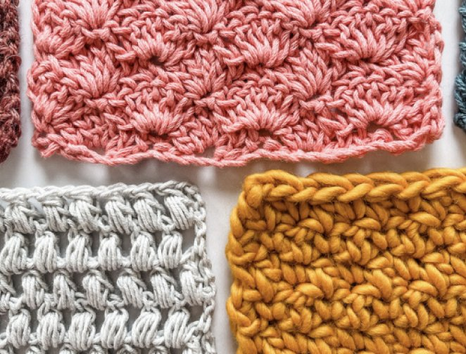
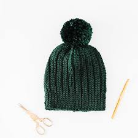
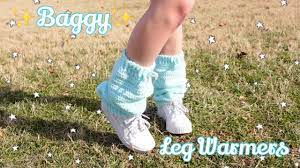
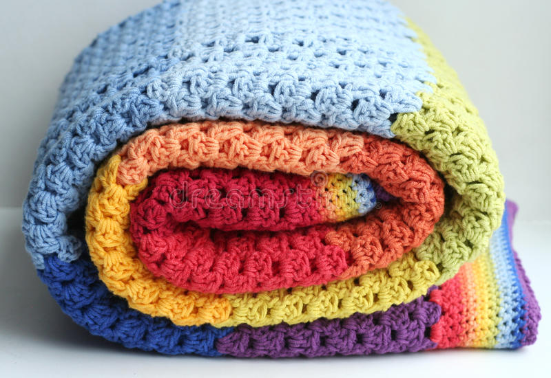

Ready to start on a new/first project? You are in the right place :) In the list below, you’ll find beginner-friendly crochet patterns that are simple and easy to follow. You can start with the simplest pattern and work your way up to more difficult ones as you gain experience. So whether you’re a total beginner or you’ve been crocheting for years, we’ve got a pattern that will suit your needs.

It's one of the first pieces I have made to master basic stitches. When you think about it, scarfs are just a long rectangle and is straight forward. Someone that can help you learn step by step is a lovely YouTuber names Sewrella!
Click on the picture to go to Sewrella's tutorial on scarfs!(photo credit: Sewrella)
Beanies make a great gift for family or for yourself! This requires chunky yarn, so the hat is warm and cozy (perfect for Michigan weather right now). It will take less than a bulk of yarn and a little bit more of a challenge from a scarf. forthefrills makes a wonderful tutorial on the beanies. It's simple and a quick watch, so please check it out!
Click on the picture to go to forthefrills's tutorial on the beanie!(photo credit: forthefrills)
If you haven't notice leg warmers are trending again! Here's an easy tutorial by Gabrielle McAuley, who teaches you how to make it in under 20 minutes!
Click on the picture to go to McAuley's tutorial on leg warmers!(photo credit: Gabrielle McAuley)
Here's your chance to make a blanket that's just for you! Bella Coco created a beginner friendly tutorial in under 20 minutes!
Click on the picture to go to Coco's tutorial a Blanket!(photo credit: Stock photo)
After creating the first four pieces, you'll most likely be ready to make your first sweather. Erin B. makes an oversized pullover sweater that you can wear! The tutorial is 21 minutes long and talks about their process through voiceovers.
Click on the picture to go to Coco's tutorial a Blanket!(photo credit: Stock photo)